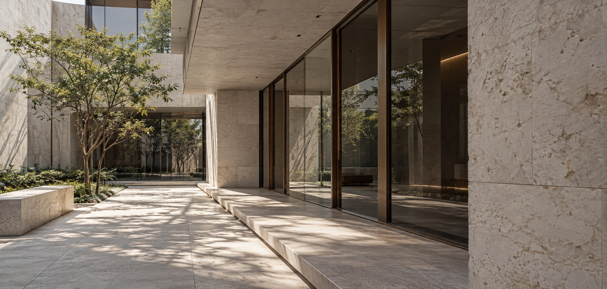
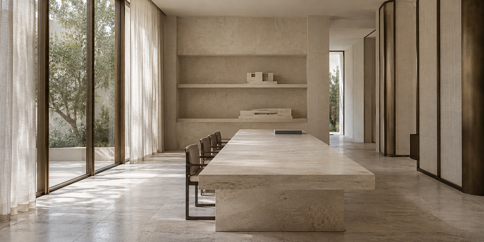
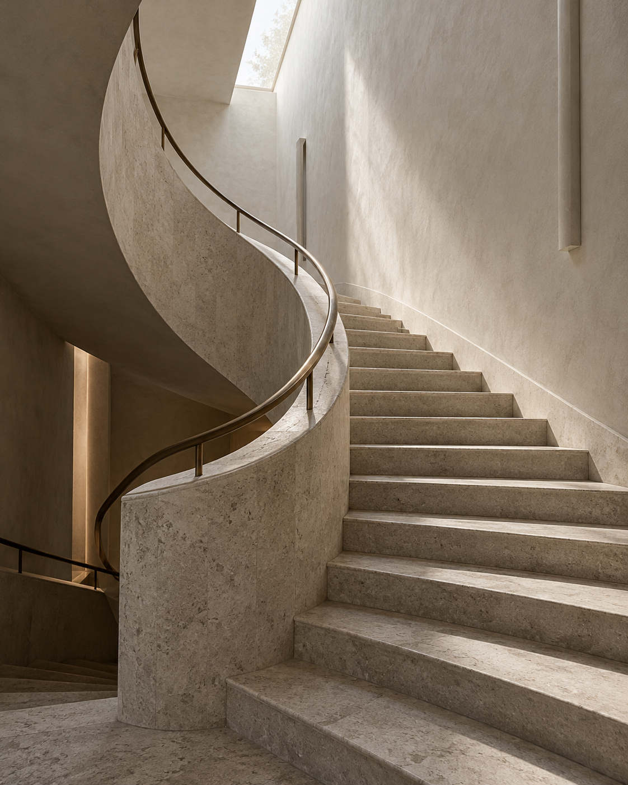
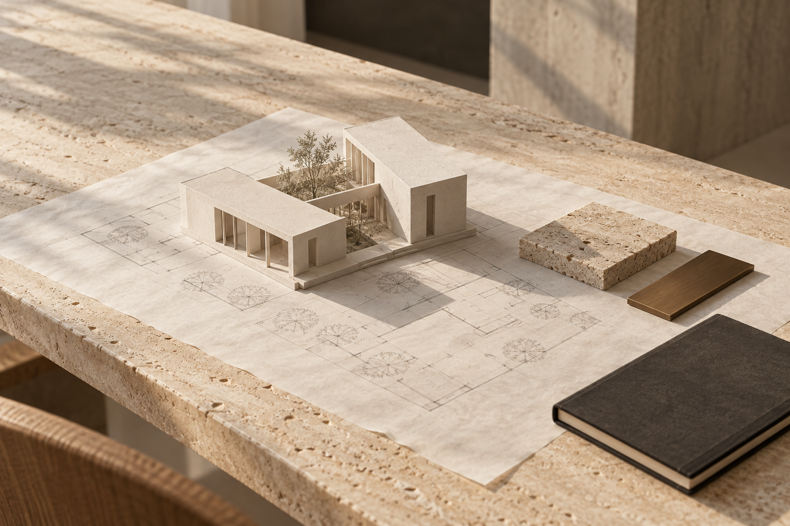
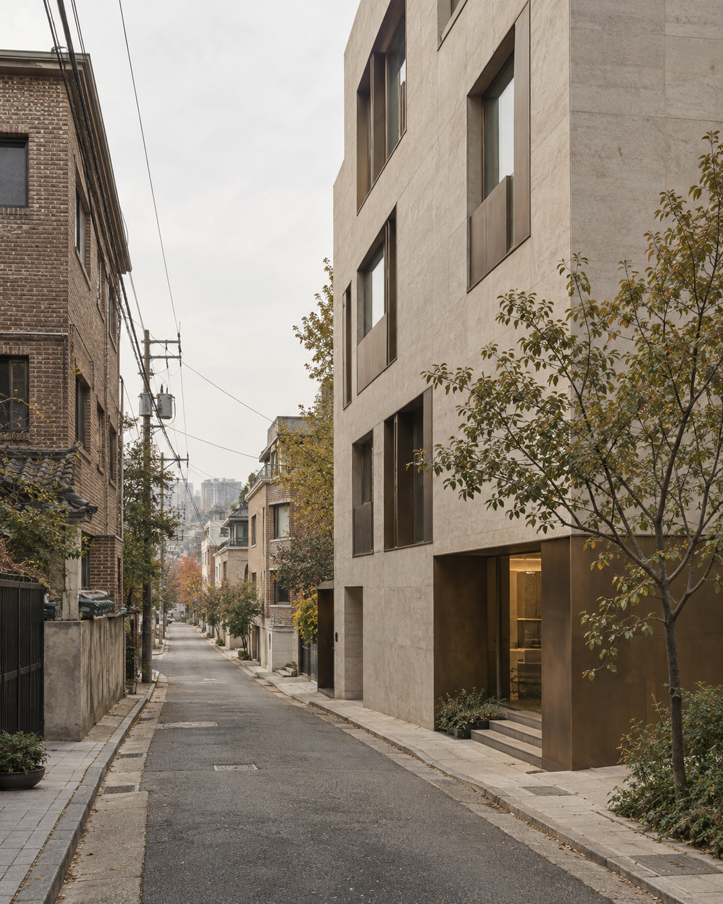
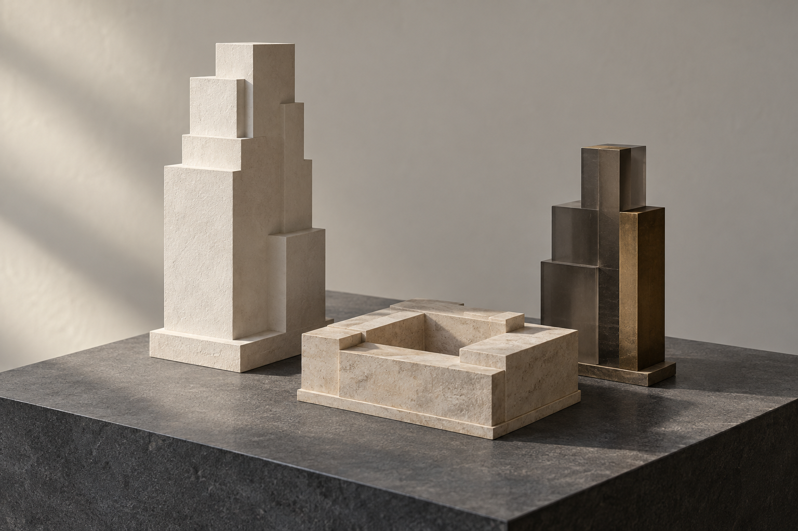
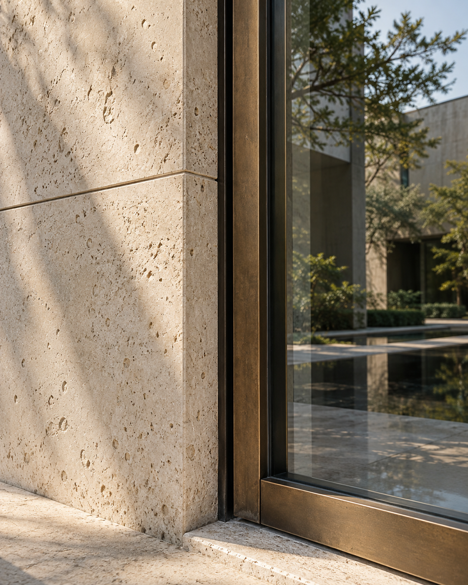

ARCHITECTURE · FEASIBILITY · FINANCE
공간을 설계하고,
가치를 구조화하다.
01 / ABOUT FORMEQUA
A research atelier by Wanhee Park.A way
of seeing.
공간의 가능성을 읽고,
사업의 구조를 설계합니다.
대지의 조건에서 건축의 형태, 사업의 구조까지.
금융 실무와 실증 연구, 디지털 모델을 연결해
공간이 지닌 가능성을 살펴봅니다.

OUR PERSPECTIVE
공간을 읽는 일은,
그 안의 관계를 이해하는 일.
하나의 장소에는 도시의 맥락과 쓰임,
개발의 조건과 자본의 선택이 함께 놓여 있습니다.
FORMEQUA는 이 관계를 연결하며
공간과 사업의 가능성을 연구하는
박완희의 리서치 아뜰리에입니다.
OUR APPROACH
The life of a place.

THE INQUIRY
From place to possibility.

장소의 조건을 읽습니다.
대지와 가로, 법규와 도시의 맥락.
공간의 형태를 탐색합니다.
규모와 쓰임, 재료와 공간의 관계.
사업의 가능성을 검토합니다.
개발의 선택과 금융의 구조.
THE RESEARCHER
Powered
by WAN2.
박완희 Wanhee Park
개발 현장의 경험과 금융의 시선,
연구를 통해 쌓은 질문에서
FORMEQUA는 시작되었습니다.
공간을 이해하는 방법을 넓히고,
새로운 가능성을 직접 탐구합니다.
02 / SELECTED STUDIES
PLACE / FORM / VALUEPossibilities,
taking form.
대지에서 시작해,
공간과 사업의 가능성을 살펴봅니다.
기본 대안 A와 지역의 가로 맥락을 반영한 AI 조감도 · 실제 현황·준공 사진은 아니며, 입력과 대안에 따라 모형은 달라집니다.
AI VISUAL STUDY
조감도에서, 하나의 장면으로.
공간의 검토가 새로운 이미지로 이어집니다.
03 / THE ATELIER
From place
to form.
형태와 재료를 구체화하고,
그 선택의 조건을 함께 살펴봅니다.
Yeoksam — Office study
용도 검토조건·근거 보기 +
용도에 따른 자동 배치 초안 · 공간 구성과 치수는 설계 검토가 필요합니다.
공간을 준비하고 있습니다.
3D 화면을 불러오지 못했습니다. 설계 조건과 분석 자료는 계속 살펴볼 수 있습니다.04 / READING THE SITE
Place,
before form.
건축의 출발점은 장소입니다.
대지의 맥락과 조건을 차분히 읽고
그 위에 가능한 공간을 그려봅니다.
대지 조건 살펴보기
선택한 연구의 면적·용도지역·도로 조건을 이 페이지에서 살펴봅니다. 예시 연구의 수치는 계획 가정이며, 실제 필지 자료가 적용된 경우에도 공부상 면적과 접도 조건은 별도 확인이 필요합니다.
강남구 역삼동 823 일원
- LOCATION
- 서울특별시 강남구
- SITE AREA
- 1,650 ㎡
- ZONING
- 일반상업지역
- STREET
- 30 m
- CONTEXT
- 테헤란로 지구단위계획구역
검토 기준 살펴보기
선택한 용도지역의 일반 건폐율·용적률 기준을 참고합니다.
개별 필지의 지구단위계획·고시, 허용 용도와 도로·높이 조건은 추가 확인이 필요합니다. 현재 모형은 인허가가 확정된 설계안이 아닙니다.

05 / MATERIAL & ATMOSPHERE
A language
of materials.
돌의 온도, 벽돌의 깊이, 유리의 투명함.
재료는 형태를 넘어
공간의 분위기를 완성합니다.
아노다이징 알루미늄 메탈패널
모형에서 살펴보기 ↑06 / A CONSIDERED PERSPECTIVE
설계와 가치 사이의 균형From form
to value.
짓는 비용에서 운영의 시간까지.
공간의 선택이 남기는 가치를 살핍니다.